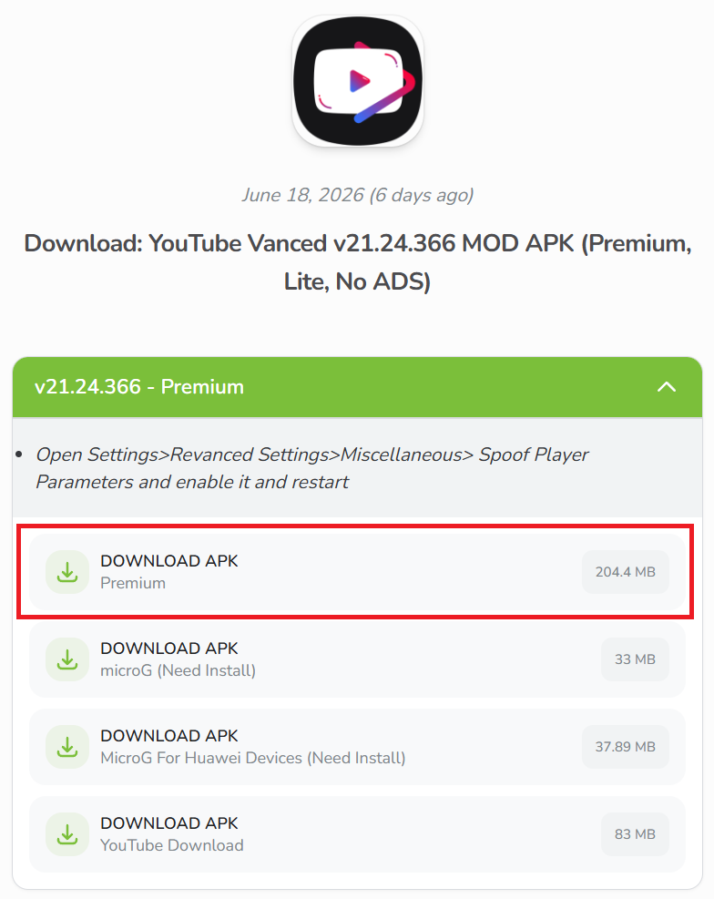

Youtube Morphe (Premium)
In order to watch your favorite YouTube videos (even while driving), you need to install an alternative version to the one available in the BYD Store. If you download YouTube from the Aurora Store or any other app store, it won't work. What you'd need is a customized version of YouTube that will give you features only available in the premium version (ad-free videos, background videos, etc.) for free, without requiring a subscription.
Best used for
Parked media viewing, background playback and reducing interface clutter. MicroG is required for this app to work. Make sure you have installed MicroG and done it's initial set up before attempting this.
Compatibility note
A prompt indicating that disabling battery optimisation is required will appear each time the app is started up. BYD head units does not support this. Acknowledge the prompt and the app will still work normally.
How to install
Obtain the APK from a trusted source and keep a record of the version you are installing. Go to LiteAPK's website and download the "Premium" version of the YouTube Vanced app.

Usage tips
This repository is a guidance directory. It does not host APK files and does not guarantee APK integrity, legality, compatibility or safety. Verify sources before installing or distributing files.